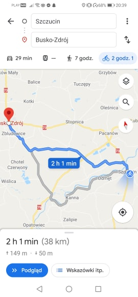
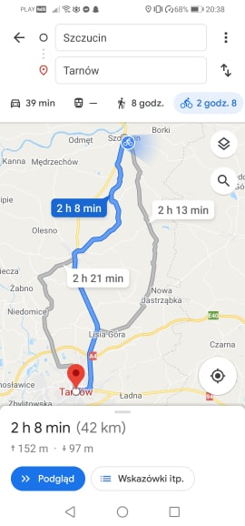
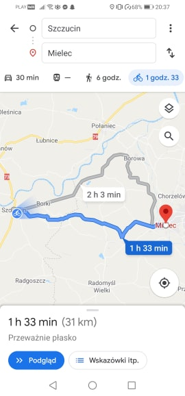

Moje Hobby
Moim ulubionym hobby jest jazda na rowerze.Jest to bardzo zdrowy sport dla organizmu oraz rekreacyjny.Przebywanie na świeżym powietrzu ma swoje plusy ponieważ mogę podziwiać jak rozwija się przyroda.Mogę sobie obrać daną trasę gdzie dostanę się tylko rowerem i z każdą przejażdzką zdobywać nowe doświadczenie i nowe okolice. Jazda rowerm jest też korzystna dla środowiska oraz dla samego człowieka.
Trasy jakie pokonałam:



| Trasa | Kilometry | Czas |
| Szczucin-Tarnów | 42 Kilometry | 2h 30 minut |
| Szczucin-Mielec | 31 Kilometry | 2h |
| Szczucin-Busko-Zdrój | 38 Kilometry | 2h |
Styl Jazdy
Kolejnym plusem jazdy na rowerze jest to że każdy może sobie wybrać styl jazdy np Kolarsto,Kolarstwo Górskie itp."
Rower szosowy Jest to rower do szybkiej jazdy lecz nadaje się do jazdy po gładkiej nawierzchni np: Asfalt.
Rower górski Jest to przeciwieństwo rowera szosowego jest on lekki i ma grube opony oraz naddaje się do jazdy w trudnym terenie.
Rower Miejski Rower ten przeznaczony jest jak sama nazwa wskazuje po mieście ma on grube opony i duże koła oraz posiada bagażnik.
Rower trekkingowy Rower trekkingowy jest to rower tursystyczny Wyposażony jest w przerzutki, amortyzatory, światła zapewnia wyprostowaną pozycję i komfort podczas jazdy.
Strona Stworzona przez: Joanna Kułaga 1LOA